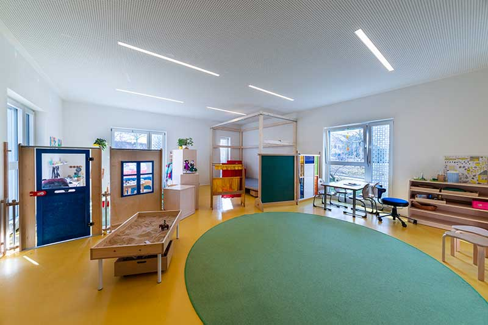
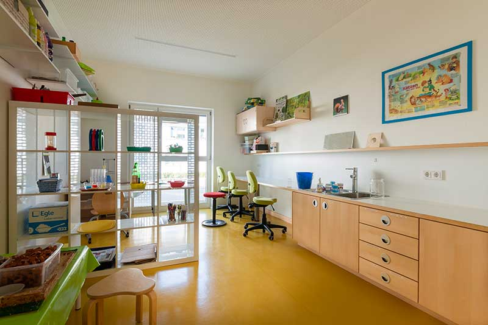

Schlafen und Ruhen
Damit Ihr Kind seinem ganz individuellen Schlafbedürfnis nachkommen kann, wurde der Schlaf- und Ruheraum bewusst räumlich abgetrennt. Hier findet Ihr Kind Ruhe und eine Rückzugsmöglichkeit, immer wenn es diese benötigt.
In vier altersgemischten Gruppen lernen jüngere Kinder von älteren – und die Älteren üben sich in Rücksichtnahme, Hilfsbereitschaft und Verantwortungsbewusstsein.

Seit über 70 Jahren
Als Kindergarten St. Suso im Jahr 1954 eröffnet, fand die Betreuung noch in Gruppen mit bis zu 40 Kindern statt. Diese wurden zwar schon damals ganztags betreut, gingen jedoch zum Mittagessen noch jeden Tag für zwei Stunden nach Hause. Bis in die 1990er verringerte sich die Gruppenstärke kontinuierlich auf 30 Kinder.
Erst dank des 1996 fertiggestellten Anbaus wurde es räumlich möglich, mehr Gruppen zu bilden. Um den wachsenden pädagogischen Herausforderungen gerecht zu werden, beschloss der Träger – die Katholische Pfarrgemeinde Konstanz-Petershausen – im Jahr 2013 eine zweite bauliche Erweiterung. Seither bietet Ihnen das Kinderhaus St. Suso ein modernes Gebäude mit offenem Raumkonzept, in dem 72 Kinder in drei Kindergarten- und einer Krippengruppe betreut werden.

Öffnungszeiten
Die Ganztagesbetreuung findet in zwei Kindergartengruppen (Ü3) und in der Kinderkrippe (1 – 3 Jahre) statt.
Der Tag bei uns
Damit Ihr Kind seinem ganz individuellen Schlafbedürfnis nachkommen kann, wurde der Schlaf- und Ruheraum bewusst räumlich abgetrennt. Hier findet Ihr Kind Ruhe und eine Rückzugsmöglichkeit, immer wenn es diese benötigt.

Im Rahmen der Ganztagesbetreuung isst Ihr Kind gemeinsam mit den anderen Kindern im Bistro. Dabei achten wir auf frische und möglichst regionale Zutaten und beziehen unser Mittagessen von der Polizeikantine Konstanz.

Spannende Experimente und Wissenswertes für jedes Alter erwarten Ihr Kind im Bereich Forschen & Experimentieren. In der Lese- und Schreibwerkstatt wird es zudem spielerisch an das Lesen und Schreiben herangeführt.

In unserem Atelier, in der Textilwerkstatt oder im Bereich Bauen und Konstruieren haben die Kinder die Möglichkeit, sich auszuprobieren und sich handwerkliche Fähigkeiten anzueignen.

Klettern, springen, balancieren und rennen: In unserem großen Außenspielbereich bewegt sich Ihr Kind jeden Tag an der frischen Luft. Der Bewegungsraum bietet zusätzlich viel Platz zum Turnen und Tanzen.

In der Holzwerkstatt lernen Kinder den sicheren Umgang mit echtem Werkzeug – vom ersten Nagel bis zum fertigen Werkstück. Begleitet wird das immer von einer pädagogischen Fachkraft.
Elternbeiträge
Elternbeiträge ab 1. Januar 2020. Der Beitrag wird für 11 Monate erhoben – der August ist beitragsfrei.
| Platzart | 1. Kind | 2. Kind | 3. Kind |
|---|---|---|---|
| Kindergarten (Ü3, 3 – 6 Jahre) | |||
| VÖ-Platz ohne Mittagessen | 92 € | 62 € | 0 € |
| GT-Platz zzgl. 92 € Mittagessen | 173 € | 152 € | 63 € |
| Krippe (1 – 3 Jahre) | |||
| VÖ-Platz ohne Mittagessen | 178 € | 148 € | 50 € |
| GT-Platz zzgl. 92 € Mittagessen | 293 € | 222 € | 126 € |
Erfahren Sie mehr
Wir sehen Ihr Kind als Individuum, das wir entsprechend seiner persönlichen Entwicklung und seinen Fähigkeiten individuell begleiten und fördern.
Unser Bild vom Kind
Auf drei Stockwerken mit Kunst-, Näh-, Bewegungs-, Musik-, Bau-, Theater-, Lese- und Experimentierbereich sowie einem großen Außenspielplatz.
Grundrisse ansehenSie möchten einen Platz anfragen, unser pädagogisches Konzept anfordern oder das Kinderhaus besichtigen? Schreiben Sie uns – wir melden uns zurück.